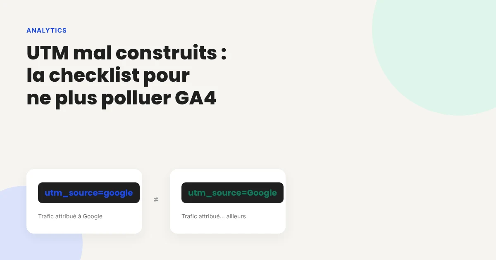

UTM mal construits : la checklist pour ne plus polluer vos rapports GA4
La documentation officielle de Google le dit noir sur blanc : les valeurs des paramètres UTM sont sensibles à la casse. utm_source=google et utm_source=Google ne sont pas la même source pour GA4. Un problème de nommage, pas de tracking, mais qui fausse silencieusement vos rapports d'acquisition.

Un rapport d'acquisition GA4 qui affiche dix lignes différentes pour ce qui devrait être trois canaux ne révèle presque jamais un problème de tracking. Il révèle un problème de nommage des paramètres UTM, en amont, au moment où les liens ont été construits — par des personnes différentes, à des dates différentes, sans convention partagée. Le point de départ de cet article est une précision que la documentation officielle de Google formule sans ambiguïté : les valeurs des paramètres UTM sont sensibles à la casse. L'exemple donné directement par Google dans son article d'aide sur les générateurs d'URL est utm_source=google comparé à utm_source=Google — deux valeurs strictement différentes du point de vue du système, bien qu'identiques à l'œil humain.
Ce que dit précisément la documentation Google
L'article d'aide officiel (« URL builders : Collect campaign data with custom URLs ») pose trois règles simples, mais qui ne sont presque jamais appliquées de façon systématique sur la durée : toujours utiliser au minimum les trois paramètres utm_source, utm_medium et utm_campaign quand on ajoute des paramètres à une URL ; les valeurs sont sensibles à la casse ; et les données remontent dans le rapport d'acquisition sous l'onglet correspondant. Rien d'exotique dans ces règles — c'est leur application sur la durée, par plusieurs personnes et plusieurs outils (plateformes publicitaires, outils d'emailing, générateurs de liens tiers), qui échoue silencieusement.
Pourquoi ça casse silencieusement, et pas d'un coup
Le problème ne se manifeste jamais comme une erreur visible. GA4 n'affiche aucun avertissement quand il reçoit utm_source=Google au lieu de utm_source=google : il crée simplement une nouvelle ligne de source distincte, sans la fusionner avec l'existante. Sur un mois, l'effet est marginal. Sur un an, avec plusieurs campagnes, plusieurs intervenants (agence, interne, freelance) et plusieurs outils de création de liens, le rapport d'acquisition finit fragmenté en dizaines de variantes d'un même canal réel — faussant au passage tout calcul de performance par source qui ne regrouperait pas manuellement ces variantes a posteriori.
La checklist à appliquer avant de publier un lien
Quatre règles suffisent à éliminer la quasi-totalité des cas de fragmentation : toujours écrire les valeurs UTM en minuscules, sans exception, y compris si l'outil de création de campagne propose une valeur par défaut avec une majuscule ; figer une liste fermée de valeurs autorisées pour utm_medium (par exemple cpc, email, social, referral — jamais de variante libre comme Email ou mail) ; documenter la convention de nommage dans un fichier partagé accessible à toute personne qui crée des liens, agence comprise ; et vérifier périodiquement le rapport d'acquisition pour repérer une variante naissante avant qu'elle ne s'accumule sur plusieurs mois.
Pourquoi un générateur d'UTM seul ne suffit pas
Un générateur d'UTM, qu'il s'agisse de celui de Google ou d'un outil tiers, construit une URL correctement formée, mais ne connaît pas la convention de nommage propre à une organisation : il acceptera aussi bien Email que email si on les lui soumet. La vraie protection n'est donc pas l'outil, mais la discipline en amont : une liste de valeurs autorisées, documentée et consultée par défaut avant toute création de lien, quel que soit l'outil utilisé pour le générer.
FAQ
utm_source=google et utm_source=Google donnent-ils vraiment deux lignes différentes dans GA4 ?
Oui. La documentation officielle de Google sur les URL builders précise explicitement que les valeurs des paramètres UTM sont sensibles à la casse (case sensitive), et donne cet exemple précis : utm_source=google est différent de utm_source=Google. Dans les rapports GA4, ces deux valeurs apparaissent comme deux sources distinctes.
Quels paramètres UTM Google recommande-t-il d'utiliser systématiquement ?
La documentation Google indique que vous devriez toujours utiliser utm_source, utm_medium et utm_campaign quand vous ajoutez des paramètres à une URL. utm_term et utm_content restent optionnels, utiles pour distinguer des mots-clés ou des variantes créatives au sein d'une même campagne.
Faut-il construire ses UTM à la main ou utiliser un générateur ?
Un générateur ne protège pas automatiquement contre les incohérences de casse ou de nommage si plusieurs personnes ou outils construisent des liens indépendamment. La vraie protection est une convention de nommage documentée et partagée (toujours en minuscules, valeurs figées pour utm_medium) associée à un générateur ou un tableau partagé qui l'applique, pas l'outil seul.
Un rapport d'acquisition GA4 fragmenté en trop de variantes ?
Pour aller plus loin, voir la page Analytics, et l'article 5 erreurs de configuration GA4 qui faussent vos données.
Pour continuer sur ce sujet.